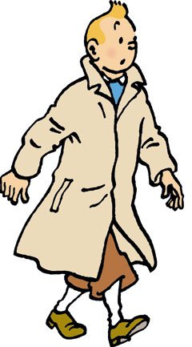

¿Nunca habéis visto los dibujos de las aventuras de Tintín? Aquí os dejo un capitulo para que veáis como son estos maravillosos dibujos animados:
¿Quién es Tintín?
Se trata de un joven reportero intrépido que, acompañado de su inseparable perrito Milú, se embarcará en una serie de aventuras que lo llevarán por los cinco continentes enfrentándose a menudo a todo un grupo de malvados.
Tintín es joven, rubio, de mediana estatura, y tiene un característico tupé. Su edad es difícil de determinar: no es adolescente pero tampoco adulto (se podría estimar que tiene alrededor de 20 años de edad). Como suele ocurrir con los personajes de cómic, Tintín apenas cambia a lo largo de los años. Desde 1929 hasta 1976 mantendrá su aspecto juvenil y su atuendo variará poco, apenas el color de los calcetines o el de la camisa. Solo en la última de sus aventuras publicadas, Tintín y los 'Pícaros', cambiará sus bombachos por unos pantalones campana, más a la moda.